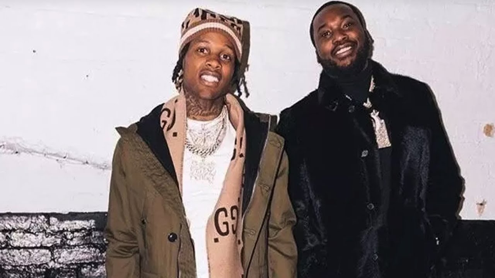
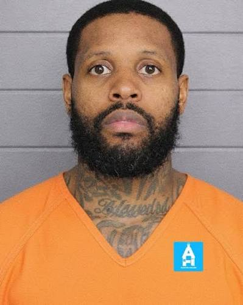
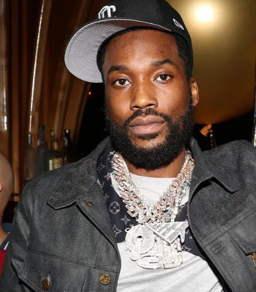

Meek Mill’s “Free Durk” Message Backfires as Social Media Questions His Defense
Music | Hip-Hop
Published: Friday, September 4, 2026

Meek Mill is facing a wave of online criticism after publicly defending Lil Durk while the Chicago rapper’s federal murder-for-hire case moves through its final stages.
Philadelphia rapper Meek Mill has once again entered the public conversation surrounding Lil Durk’s federal trial, this time questioning the circumstances that shaped Durk’s life and the violence experienced by people close to him.
In a post shared on X on September 4, Meek called Durk an “innocent kid from Chicago” and questioned why members of the rapper’s family and inner circle had been killed.
Meek also reflected on his and Durk’s childhood experiences, mentioning playing SEGA, drawing and watching The Lion King. He argued that an entire generation had been failed before being blamed for the circumstances surrounding them.
The message quickly became controversial.
Social Media Pushes Back
While some people supported Meek’s position and viewed his comments as an attempt to discuss the environment surrounding Chicago’s violence, others focused on his description of Durk as an “innocent kid.”
Critics argued that Durk is an adult facing serious federal allegations and that discussing his childhood does not resolve questions surrounding his alleged actions later in life.
Others interpreted Meek’s message differently, suggesting that he was raising a broader question about how poverty, violence, loss and neighborhood conditions can affect young people long before they become adults.
The debate has placed Meek’s comments alongside the larger discussion surrounding Durk’s case rather than changing the legal proceedings themselves.
Durk Continues to Fight Federal Charges

Lil Durk, whose legal name is Durk Banks, has pleaded not guilty to federal charges that include conspiracy, murder-for-hire resulting in death and using a firearm in connection with a violent crime.
Prosecutors allege that Durk was involved in a retaliation-related scheme connected to the 2022 killing of Saviay’a “Lul Pab” Robinson, who was traveling with rapper Quando Rondo.
Durk’s defense has disputed the government’s characterization of the case, including the prosecution’s theory that the alleged killing was carried out as part of a murder-for-hire arrangement.
Defense attorneys have argued that prosecutors have not established that Durk paid anyone to carry out the killing.
OTF Jam Testimony Draws Attention
One of the government’s significant witnesses has been Kacey Hester, known as OTF Jam.
During testimony, Hester described conversations he said he had with Durk and discussed an alleged statement concerning Quando Rondo and Lul Timm.
Hester also acknowledged during cross-examination that cooperating with federal prosecutors could carry serious consequences within the Black Disciples organization.
Durk’s attorneys have challenged Hester’s credibility while attempting to undermine aspects of the government’s case.
Meek previously weighed in on Hester as well, publicly criticizing the witness and questioning whether his testimony should be trusted.
Prosecutors and Defense Clash Over Lyrics
Another major issue in the trial has involved the interpretation of Durk’s music.
Prosecutors have pointed to lyrics and recordings they argue contain references to violence or retaliation. Durk’s defense has pushed back against attempts to treat rap lyrics as straightforward evidence of criminal conduct.
The dispute continued when Durk’s audio engineer took the witness stand as the defense began presenting its case.
Prosecutors rested their case on September 3, according to reports, marking a major transition in the proceedings as Durk’s attorneys began calling witnesses.
Meek’s Argument Goes Beyond the Courtroom

Meek’s latest statement appears to frame Durk’s situation through the lens of the violence and loss surrounding his upbringing and career.
Durk has experienced several significant personal losses, including the 2021 killing of his older brother, Dontay “DThang” Banks. His close friend and collaborator King Von was also killed in Atlanta in 2020.
Those losses have become part of the broader public discussion surrounding Durk’s life and the culture of violence connected to Chicago’s drill-rap scene.
However, the circumstances surrounding those tragedies do not determine the federal allegations against Durk, which remain contested in court.
For now, Meek Mill’s comments have created another layer of public discussion as the trial approaches its conclusion. Supporters continue to rally around Durk, while critics argue that supporting a defendant and declaring someone innocent are two different things.
The ultimate determination of Durk’s criminal liability will come through the federal court proceedings, not social media debate.